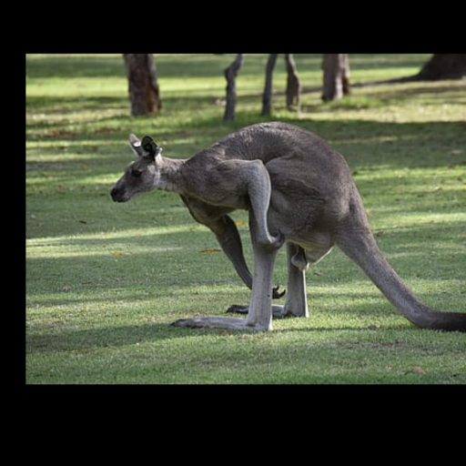
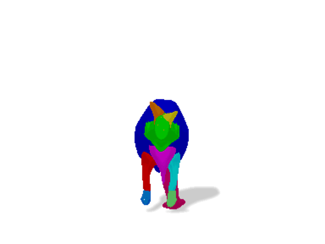
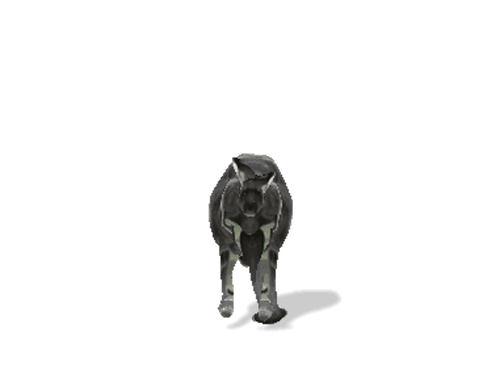
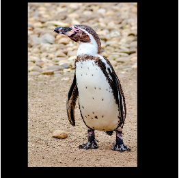

Input image ensemble
3D outputs (per-instance)
Given 20-30 in-the-wild images of an articulated animal class, Hi-LASSIE first discovers a generic 3D skeleton, then optimizes the camera viewpoints, skeleton articulations, as well as the shared and per-instance neural part surfaces.
Abstract
Automatically estimating 3D skeleton, shape, camera viewpoints, and part articulation from sparse in-the-wild image ensembles is a severely under-constrained and challenging problem. Most prior methods rely on large-scale image datasets, dense temporal correspondence, or human annotations like camera pose, 2D keypoints, and shape templates. We propose Hi-LASSIE, which performs 3D articulated reconstruction from only 20-30 online images in the wild without any user-defined shape or skeleton templates. We follow the recent work of LASSIE that tackles a similar problem setting and make two significant advances. First, instead of relying on a manually annotated 3D skeleton, we automatically estimate a class-specific skeleton from the selected reference image. Second, we improve the shape reconstructions with novel instance-specific optimization strategies that allow reconstructions to faithful fit on each instance while preserving the class-specific priors learned across all images. Experiments on in-the-wild image ensembles show that Hi-LASSIE obtains higher fidelity state-of-the-art 3D reconstructions despite requiring minimum user input.
Results on LASSIE images




Hi-LASSIE can reconstruct high-fidelity 3D shapes of diverse animal classes (top to bottom: zebra, giraffe, tiger, elephant, kangaroo, penguin). Note that each output shape consists of 3D parts built upon the self-discovered skeleton.
Animation
Since Hi-LASSIE adopts a skeleton-based representation, it can generate animations from images simply via pose interpolatation between different instances. We show two examples of input image (left) and animation (right).
Bibtex
@inproceedings{yao2022hi-lassie,
title={Hi-LASSIE: High-Fidelity Articulated Shape and Skeleton Discovery from Sparse Image Ensemble},
author={Yao, Chun-Han
and Hung, Wei-Chih
and Li, Yuanzhen
and Rubinstein, Michael
and Yang, Ming-Hsuan
and Jampani, Varun},
year={2022}
}